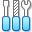

Click the display to send keyboard and mouse input to the guest. Escape releases input. One VM runs at a time.
Media remains local. Standalone VDI 1.1 images are converted to raw; snapshots and parent-linked disks are rejected. 512 MB limit per image.
A browser VM manager using VirtualBox’s original icons and a familiar desktop layout. Guest instructions run locally in the v86 WebAssembly emulator.
This is an alternative browser frontend and execution engine, not a compiled port of Oracle VirtualBox. The original Qt GUI and VirtualBox hypervisor do not run here.
Engine: v86 0.5.470 (BSD-2-Clause). BIOS: SeaBIOS / VGA BIOS from its pinned upstream revision. See the frontend README for source and license information.